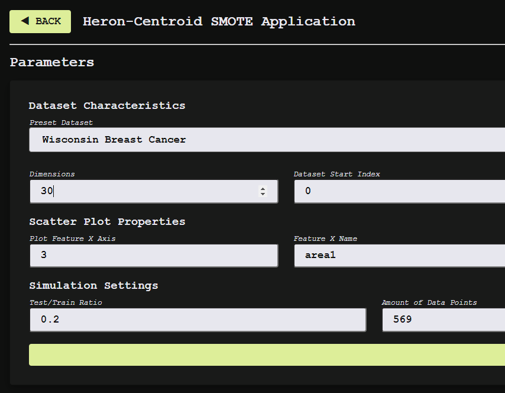

An Enhancement of SMOTE Algorithm Applied in an Intelligent System for Medical Diagnosis
This is an undergraduate thesis published in May 2024 locally in Pamantasan ng Lungsod ng Maynila; and ACM on September 2024 through ICEMT '24: Proceedings of the 2024 8th International Conference on Education and Multimedia Technology.
Read Research-Article
View Prototype